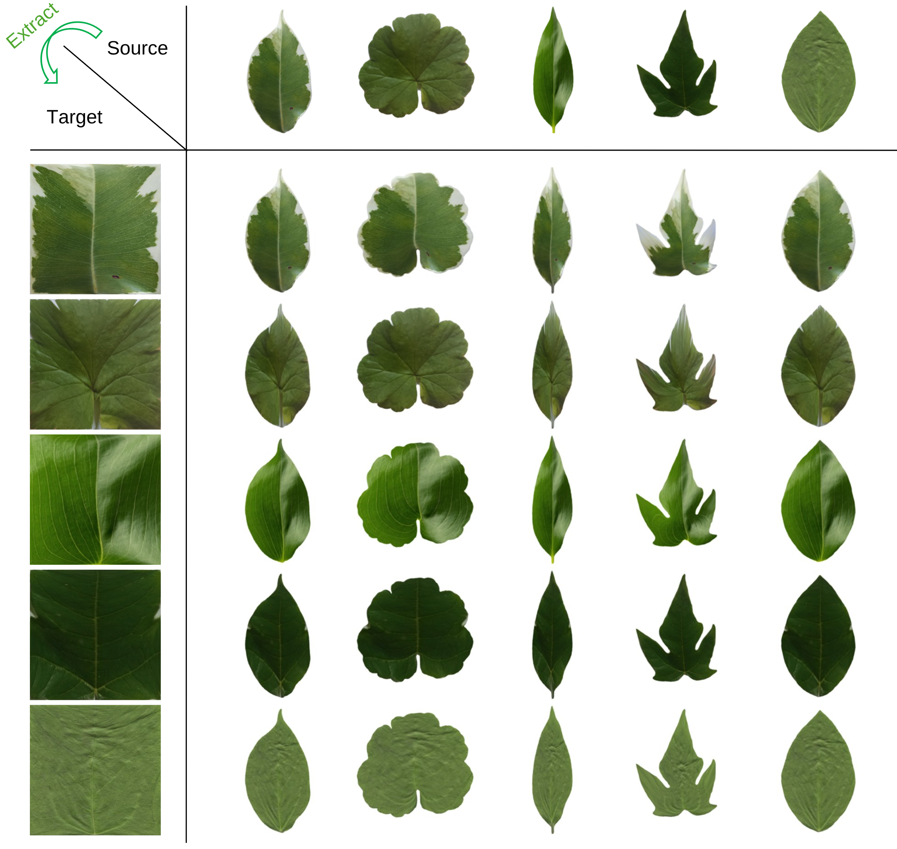

Learning 3D parametric shape models of objects has gained popularity in vision and graphics and has showed broad utility in 3D reconstruction, generation, understanding, and simulation. While powerful models exist for humans and animals, equally expressive approaches for modeling plants are lacking.
In this work, we present Demeter, a data-driven parametric model that encodes key factors of a plant morphology, including topology, shape, articulation, and deformation into a compact learned representation. Unlike previous parametric models, Demeter handles varying shape topology across various species and models three sources of shape variation: articulation, subcomponent shape variation, and non-rigid deformation.
To advance crop plant modeling, we collected a large-scale, ground-truthed dataset from a soybean farm as a testbed. Experiments show that Demeter effectively synthesizes shapes, reconstructs structures, and simulates biophysical processes.
The Demeter Model learns four parametric components from real-world data: (a) topology Γ, a tree-structured graph that stores the binary connection relationship from human annotations; (b) articulation parameters θ defining each node’s relative position to its parent, using quaternions for rotation and 1D translation; (c) shape parameter β, representing leaf variance via principal component coefficients, learned from 2D leaf scans; (d) deformation parameter γ, which learned from 3D leaf point cloud and fixed 2D shape parameter β, controls the skeletons of leaf and stem. Here the gray, blue and green node represents root, stem and leaf respectively.
Select a soybean sample to view the input image, ground-truth point cloud, and reconstructed mesh.
Drag to rotate • Scroll to zoom
Drag to rotate • Scroll to zoom
We extract PCA components from the 2D leaf scannings for each species, and show the first 4 components, ranging from (-2σ, 2σ).
Papaya
We extract PCA components from the 3D leaf models for each species, and show the first 4 components, ranging from (-2σ, 2σ).
Papaya
We extract PCA components from the 3D stem models for each species, and show the first 4 components, ranging from (-2σ, 2σ).
Papaya
We can extract the texture from the real-world leaf scans, and transfer to other leaf shapes.
We can transfer the deformation from one leaf to another.
We can simulate the photosynthesis with the output mesh from Demeter in Helios.
We can reconstruct the 3D model from the real-world data.
@article{cheng2025demeter,
author = {Cheng, Tianhang and Zhai, Albert J. and Chen, Evan Z. and Zhou, Rui and Deng, Yawen and Li, Zitong and Zhao, Kejie and Shiu, Janice and Zhao, Qianyu and Xu, Yide and Wang, Xinlei and Shen, Yuan and Wang, Sheng and Ainsworth, Lisa and Guan, Kaiyu and Wang, Shenlong},
title = {Demeter: A Parametric Model of Crop Plant Morphology from the Real World},
journal = {ICCV},
year = {2025},
}